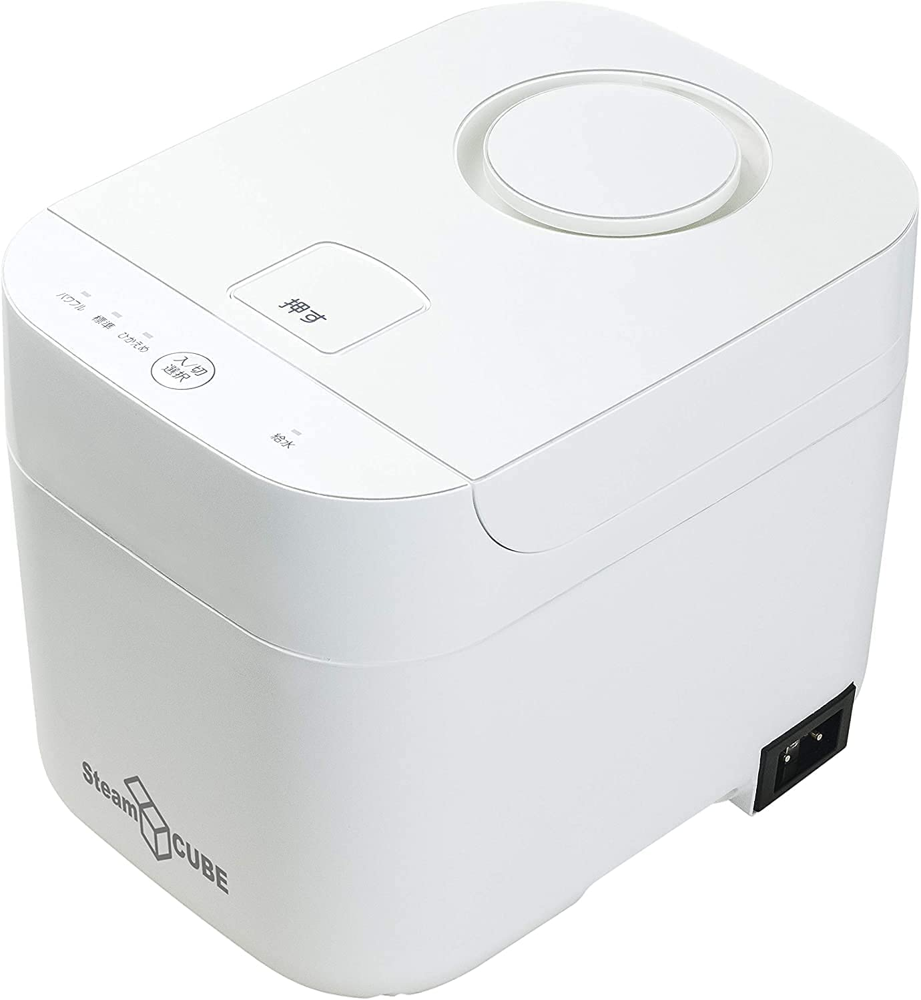

加湿器なら山善のスチーム式がおすすめ！パワフルで衛生的な加湿器を紹介します
2023-01-03 by 内田裕之
- 「冬の乾燥対策をしたいけど、加湿器ってどれがいいの？」
- 「山善のスチーム式加湿器K284ってどうなの？」
この記事はそんな方へ向けて書いています。
こんにちは。
毎晩スチーム式加湿器を使って喉を守るうっちゃんです。
冬場に朝起きると喉が腫れたり、喘息がひどくなったりしていませんか？
実は乾燥は喉や気管の天敵なのです。
妻が気管支喘息なので乾燥にはかなり気を使っている私は、山善のスチーム式加湿器K284を愛用しています。
今回は山善のスチーム式加湿器を買って良かった点と注意点を紹介します。

■目次
山善のスチーム式加湿器の良かった点
私は山善のスチーム式加湿器K284を毎晩つけて就寝しています。
私が風邪を引きやすいこと、妻が気管支喘息をもっていることから加湿器は手放せません。
これまでに空気清浄機と加湿器が一体になっているタイプ（気化式）や超音波式の加湿器など多数試してきました。
その体験を通して言わせていただくと、スチーム式が圧倒的におすすめです。
まずは買って良かった点を紹介します。
カビが生えない
気化式や超音波式は安いけど、水カビが生えて赤くなってくるんですよね。
掃除も大変ですし、加湿しながら菌をばら撒いているように感じてしまいます。
しかし、スチーム式は加熱して水蒸気で加湿するため、水カビが発生しにくいのです。
毎晩水を変えて加湿すれば全く問題なし！
給水が簡単
スチーム式は蓋を開くだけでタンクに水を注げます。
鍋に水を汲んで持ってくるのも良いですし、タンクを取り出して水道から注ぐこともできます。
加湿がパワフル
私はコンクリート造のマンションで、6帖の和室で寝ています。
加湿器にはパワフル・標準・ひかえめの3段階がありますが、ひかえめだけで十分に夜を越せます。
また、10帖のリビングでも使えるので来客の際にも活躍できます。
水がなくなったら自動停止する
スチーム式は水を加熱して水蒸気で加湿するので、空焚きが心配ですよね。
でも、山善のスチーム式加湿器には空焚き防止機能がついています。
タンクから水がなくなると自動停止します。
朝起きるのが遅くなっても空焚きの心配をしなくていいのが安心です。
コードを引っ掛けても安心
コードを引っ掛けて本体を倒したら床や寝具が水浸しになると心配されるかもしれません。
でも、山善のスチーム式加湿器はマグネットプラグを使っているので、引っ掛けてもプラグが外れるだけです。
本体が倒れるリスクが軽減されているので、小さい子やペットが居る家庭でも安心して使えます。
内釜（タンク）が着脱できる
タンクは着脱ができるので水を貯めたり、掃除したりするのも簡単にできます。
釜の形なので底や壁面も手軽に掃除できます。
場所をとらない
サイズは幅21.5cm、奥行き30.7cm、高さ23.2cmとコンパクトなので場所をとりません。
炊飯器が置けるぐらいのスペースがあれば十分に使えます。
うちは6帖にシングルベットを3つ並べており、スペースがあまりないので助かっています。
一晩を越せる
スチーム式は水蒸気を出すので水の消費が早いですが、ひかえめモードであれば一晩を越せます。
ひかえめと言っても6帖には十分な能力です！
加湿器からはシューと小さな音がしますが、慣れれば問題なく眠れます。
山善のスチーム式加湿器の注意点

スチーム式加湿器はすごく重宝していますが、もちろんデメリットもあります。
やけどするリスク
朝起きて加湿器の電源をOFFにしたとき、蓋を締めたままだとタンクがずっと熱いんです。
タンクの水を捨てたいけど、熱い熱い。
冷めてくると蓋のパッキンに水が溜まり、水カビの原因になることも！
でも、電源を切ってからすぐに蓋を開けると水蒸気が飛び出してくるので注意が必要です。
私は蓋を少し開けてから、何度か蓋をバウンドさせます。
水蒸気が逃げたことを確認したら全開にして冷まします。
朝ごはんなど終わってから排水したり、タオルで水気を拭くと長く使えます。
内釜（タンク）にスケールが付着する
水道水を使っているせいか、水がなくなるとタンクの底が白くなります。
これはスケールと呼ばれるもので、いわゆる水に含まれるミネラル（カルシウム、マグネシウム、シリカ、ナトリウム、カリウムなどの塩類）や有機物です。
有害なものではありませんが、堆積しすぎると加湿器の故障の原因になります。
スケールの堆積が多い状態で加湿運転を行うと、加熱釜の温度が上昇し、やがて加湿器内部の安全装置が働いて電源が切れるようになります。
私はひかえめモードで運転することで朝まで水が残るようにしており、毎晩に水を交換するようにしています。
何度も水を足して使っているとスケールが濃縮されてしまうためです。
また、スケールが溜まってきたらタンクに水とクエン酸を入れて加熱することでスケールを柔らかくできます。

ただしクエン酸を入れすぎたり、タンクの水がなくなるまでやってしまうとタンクや蓋にダメージが生じます。
私は失敗しました。
タンクの塗装が剥がれたり、蓋が錆びてしまいました。。。
クエン酸を使った掃除はあまりおすすめしないので、タンクの水を切らさないことをおすすめします。
電気代が気になる
加熱式は気化式や超音波式より電気代が高いです。
夜通しで水を加熱するので、そりゃ高いですよね。。
（参考：加湿器の特徴や電気代をタイプ別に解説！電気代を節約する方法は？）
メンテナンスをこまめにしたり、部屋の広さに合わせた加湿器を選ぶことで電気代を抑えましょう。
パワフルすぎ
メリットでありデメリットでもありますが、とにかくパワフルです。
6帖の和室を締め切って加湿器をパワフルモードにして寝たところ、朝起きると天井から水が滴ってきました。
天井全体が湿っており、至るところから水が落ちてきたのです。
まるで鍾乳洞です。
また障子はふにゃふにゃになっており、加湿器のパワフルさを思い知らされました。
いまはひかえめモードにして部屋の扉を10cmほど開けて寝るようにしています。
使い方を工夫すれば山善のスチーム式加湿器は最高だと思うので、強くおすすめします。
まとめ
今回は山善のスチーム式加湿器を買って良かった点と注意点を紹介しました。
乾燥は喉や気管の天敵です。
冬場に朝起きると喉が腫れたり、喘息がひどくなったりしていませんか？
自分と家族の喉と気管を守るためにもスチーム式加湿器をおすすめします。
ここまで読んでいただきありがとうございます。